当不对doctype进行定义时，会触发怪异模式。
在标准模式下，一个块的总宽度= width + margin(左右) + padding(左右) + border(左右)
在怪异模式下，一个块的总宽度= width + margin(左右)（即width已经包含了padding和border值）
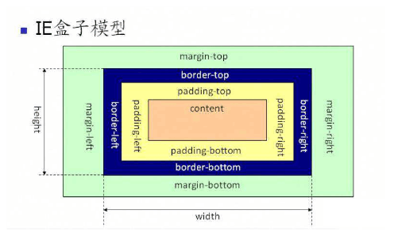

1、H5发展历史
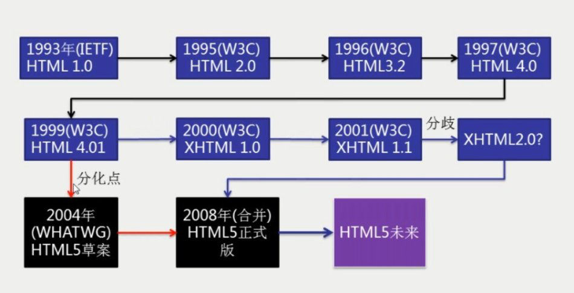
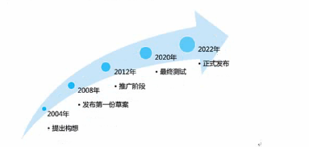
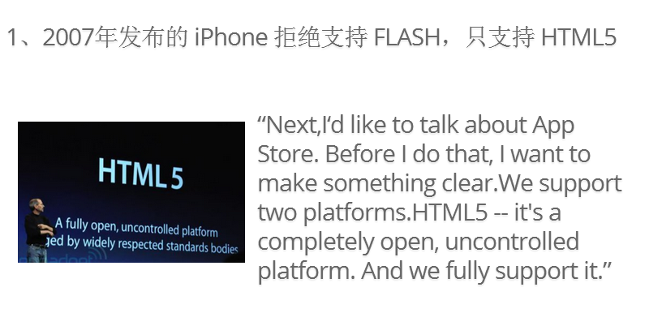
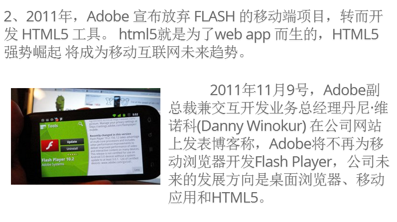
由上面的图可以得知，现在的HTML5还不是一个最终统一的版本，所以说HTML5用在手机端的开发
2、H5的浏览器兼容
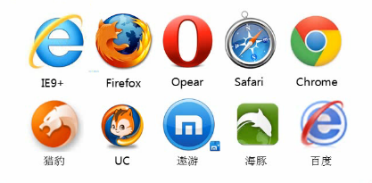
不同的浏览器显示的效果可能不一样。因为HTML5没有一个统一的标准，不同的浏览器解析时不一样的，现在还处于一个推广的阶段，但是大部分的时一样的
3、H5新的文档声明
1）Html 4的文档声明
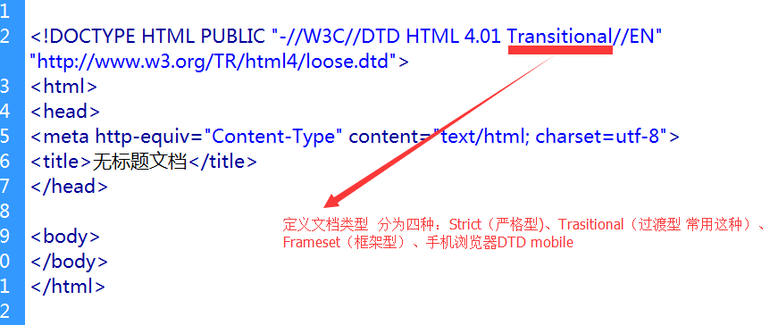
2）Html 5的文档声明
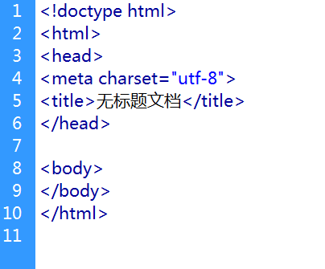
在 HTML 4.01 中，DOCTYPE 声明引用 文档类型定义DTD（Document Type Definition)，因为 HTML 4.01 基于 SGML（标准通用标记语言，是一种定义电子文档结构和描述其内容的国际标准语言；）。DTD 规定了标记语言的规则，这样浏览器才能正确地呈现内容。
HTML5 不基于 SGML，所以不需要引用 DTD。
提示：请始终向 HTML 文档添加 DOCTYPE 声明，这样浏览器才能获知文档类型。
扩展：CSS盒子模型：CSS-标准盒模型 & 怪异盒模型？
CSS中Box model是分为两种:: W3C标准 和 IE标准盒子模型。
大多数浏览器采用W3C标准模型，而IE中则采用Microsoft自己的标准。
怪异模式是“部分浏览器在支持W3C标准的同时还保留了原来的解析模式”，怪异模式主要表现在IE内核的浏览器。
DOCTYPE缺失则在ie6，ie7，ie8下将会触发怪异模式（quirks 模式）。
当不对doctype进行定义时，会触发怪异模式。
在标准模式下，一个块的总宽度= width + margin(左右) + padding(左右) + border(左右)
在怪异模式下，一个块的总宽度= width + margin(左右)（即width已经包含了padding和border值）
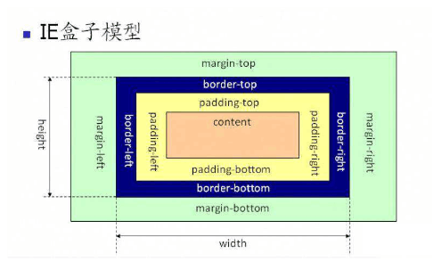
4、H5的特点
5、H5新增加的语义化标签
header头标签 header.html header_noLogin.html
nav 导航标签
article 文章标签
aside 侧边栏导航
footer 页脚 footer.html
section 章节、页眉、栏目
表示内容区块,一般入章节、页眉、页脚或者页面中的其他部分。可以与h1-h6等元素结合起来使用，标示文档的结构
表示页面中的一块与上下文不相关的独立内容，譬如博客中的一篇文章或者报纸中的一篇文章
Aside表示acticle元素的内容之外的，与article元素的内容相关的辅助信息。
表示页面中一个内容区块或者整个页面的标题
表示整个页面或者页面中的一个内容区块的脚注。一般来说，他会包含创作者的姓名、创作日期以及创作者联系信息。
表示页面中导航链接的部分、① 传统的导航条 ② 腾讯新闻 ③侧边栏导航 ④内业导航 ：百度百科 ⑤翻页操作
表示一段独立的流内容，一般表示文档主体流内容中的一个独立单元。使用figcaption元素为figure元素添加标题。
◆ figure 是一种元素的组合，带有可选 标题。用来表示网页上一块独立的内容。
◆ figcaption 表示 figure 的标题。从属于 figure ， 并且， figure 中只能放置一个 figcaption
定义视频，比如电影片段或其他视频流
<video src="路径地址" controls>您的浏览器不支持video</video> video允许有多个source元素，source元素可以连接不同的视频文件，浏览器将使用第一个可识别的格式进行播放
<source src="video.ogg" type="video/ogg"/><source src="video.webm" type="video/webm"/> 提示：可以在开始标签和结束标签之间放置文本内容，这样老的浏览器就可以显示出不支持该标签的信息。
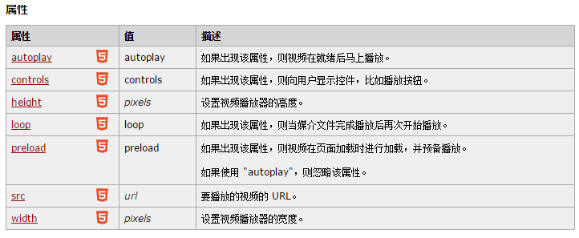
HTML5里video标签支持哪些格式的视频文件？
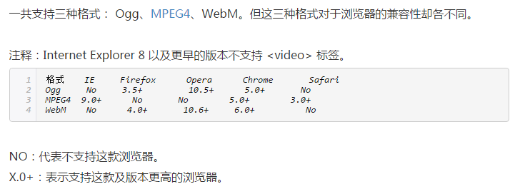
Ogg:带有Threora视频编码和Vorbis音频编码的Ogg文件；
MPEG4：带有H.264视频编码和AAC音频编码的MPEG4文件；
WebM：带有VP8视频编码和Vorbis音频编码的WebM文件
embed标签用于定义嵌套的内容，包括各种媒体，格式可以是midi、wav、AIFF、AU、MP3、Flash等
定义音频，比如音乐或其他音频流
<audio src="someaudio.wav">您的浏览器不支持 audio 标签。</audio> 提示：可以在开始标签和结束标签之间放置文本内容，这样老的浏览器就可以显示出不支持该标签的信息。
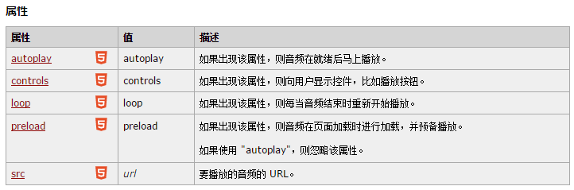
高亮显示文字，一个比较典型的应用就是在搜索结果中向用户高亮显示搜索关键词。
表示图形，比如图标和其他图像。这个元素本身没有行为，仅提供一块画布，但它把一个绘图API展现给客户端js，以使脚本能够把想绘制的东西绘制到这块画布上
<canvas id=“myCanvas” width=“200” height=“200”></canvas>
datalist提供一个事先定义好的列表，通过id与input关联，当在input内输入时就会有自动完成（autocomplete）的功能，用户将会看见一个下拉列表供其选择。
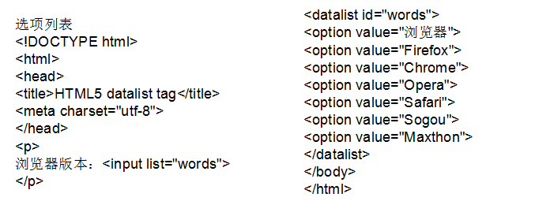
表示不同类型的输出，比如脚本的输出
for：定义输出域相关的一个或多个元素。
form：定义输入字段所属的一个或多个表单。
name：定义对象的唯一名称。（表单提交时使用）
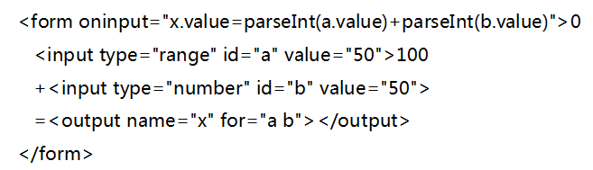
扩展：怎样让老浏览器兼容新标签?


建议使用第一种，因为不用我们自己手写相关的js代码，同时也可以降低代码的出错率，我们可以选择把第一种的js文件下载下来放入到我们的文件中，这样可以避免在网速比较慢的情况下，页面出错。
6、H5新增加的表单元素
Search/tel/url/email/number/range/color/file/Datetime/date/month/week/time/datetime-local
专门用来输入email地址的文本框,如果该文本框中内容不是email地址格式的，则不允许提交。但它不检查email地址是否存在。提交时可以为空，除非加上了required属性。 具有multiple属性，它允许在该文本框中输入一串以逗号分隔的email地址。
url：专门用来输入URL地址的文本框。如果该文本框中内容不是URL地址格式的，则不允许提交。
Number：专门用来输入数字的文本框。在提交时会检查其中的内容是否为数字，具有min、max、step的属性。<input name=“number1” type=“number” value=“25” min=“10” max=“100” step=“5” />
是用来只允话输入一段范围内数值的文本框，它具有min属性与max属性，及step属性，可以指定每次拖动的步幅。<input name=“range1” type=“range” value=“25” min=“0” max=“100” step=“5” /> min 最小值 max 最大值 step 数字间隔
拥有多个可供选取日期和时间的新输入类型。 date - 选取日、月、年 Internet Explorer 或 Firefox 不支持 "month" 元素。
month - 选取月、年 Internet Explorer 或 Firefox 不支持 "month" 元素。
week - 选取周和年Internet Explorer 或 Firefox 不支持 "month" 元素。
time - 选取时间（小时和分钟）Internet Explorer 或 Firefox 不支持 "month" 元素。
datetime - 选取时间、日、月、年（UTC 时间）Internet Explorer、Firefox 或者 Chrome 不支持 "datetime 元素，Safari 中部分支持。Opera 12 以及更早的版本中完全支持。
datetime-local - 选取时间、日、月、年（本地时间）Internet Explorer 或 Firefox 不支持 "month" 元素。
注意，跟 input 标签设置样式一样，但是要设置标签中局部的样式不能实现。如改变日历的背景色，颜色框的按钮效果等，这些都不可以实现。
7、H5新增加的表单验证
placeholder属性：文本框处于未输入状态时文本框中显示的输入提示。
autofocus属性：给文本框、选择框、或者按钮控件加上该属性，当打开页面时，该控件自动获得国标焦点，一个页面只能有一个。
required属性：验证输入不能为空
list属性：结合datalist元素使用
autocomplete属性：输入富足和所用的自动完成功能，是一个节省输入时间，同时也十分方便的功能。只有三种：on/off/""。on可是显示指定候补输入的数据列表，使用datalist元素与list属性提供候补输入的数据列表，自动完成时，可以讲该datalist元素中的数据作为候补输入的数据在文本框中显示：<input type="text" name="greeting" autoconplete="on" list ="greeting">
HTML5增加了大量在提交时对表单及表单元素内容有效性验证的功能。
min、max、step：为包含数字或日期的 input 类型规定限定（约束）
max: 最大值
min: 最小值
step: 数字间隔
novalidate 属性规定在提交表单时不应该验证 form 或 input 域。
注：novalidate 属性适用于 form以及以下类型的 input标签：text, search, url, telephone, email, password, date pickers, range 以及 color.